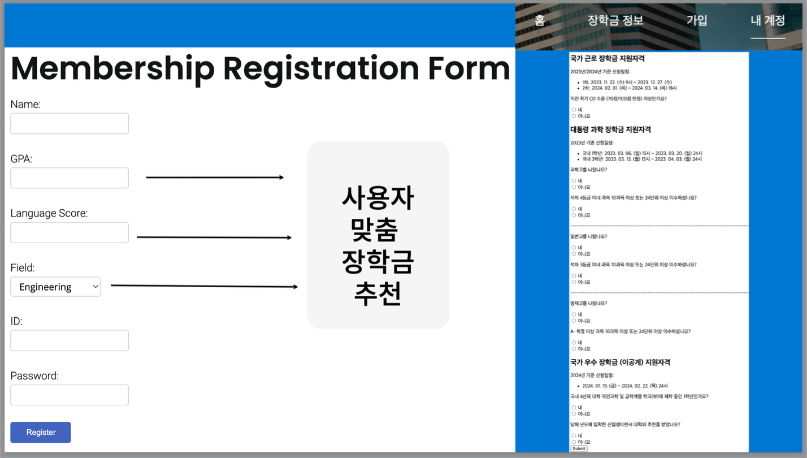
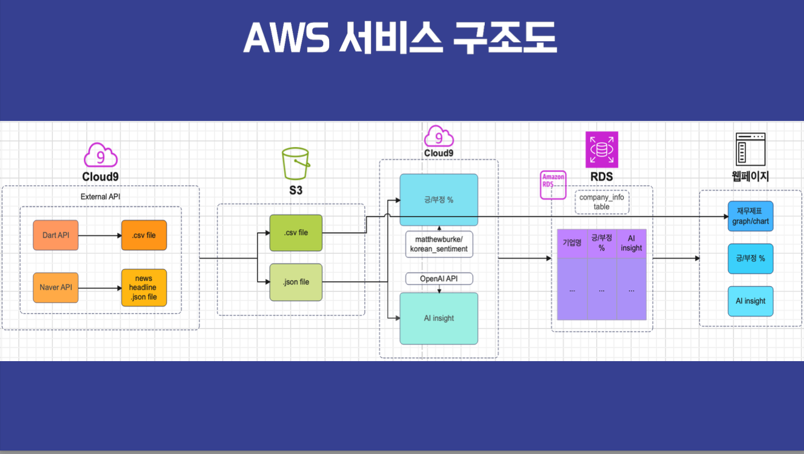

JinMan Kim
About Myself
I'm currently a sophomore student at Yonsei University majoring in artificial intelligence. Previously, I received my high school diploma in Tianjin, China, where I was lucky to interact with many enthusiastic teachers who helped me learn the usefulness and joy of robotics. When I was in high school, I came across the news that many people were suffering from cyber-crimes. Hence, starting from the fear that the people around me might also be victims of cyber-crime, I wanted to help prevent any further cyber-crimes. In the near future, I aim to to create a system that can help detect and warn underlying risks of cyber-crime. Currently, my research interest is in anomaly detection using big data analytics and unsupervised machine learning.
The curriculum I am currently taking at Yonsei University is well structured and provides comprehensive courses, helping me equip essential knowledge and skills about artificial intelligence. Not only do the academic courses help me grow, but also the extracurricular activities help foster my personal and academic growth.

Experiences
The activities listed below represent areas of interest that have played an important role in cultivating my personal and academic growth. These experiences helped me engage with people from diverse social backgrounds and enhanced my overall development.
Global Intelligence
Global Intelligence is a club that helps students develop leadership through domestic and overseas training programs. I participated in workshops and seminars organized by great speakers, ranging from previous diplomats to the CEO of Casamia.
The logo above is the symbol of the club "Global Intelligence"
As part of the 21st class of Global Intelligence, I met students from different colleges with diverse majors, which helped me broaden my perspective. The friends I made in this club are great companions and sources of inspiration, as their varied academic interests and perspectives encourage me to think out of the box. Furthermore, not only was I able to challenge myself to think more critically by talking with academically disciplined students, but was also able to make many long-lasting friends.
Images during Global Intelligence leadership programAritifical Intelligence Football & Baskteball Club (A.I.DA)
A.I.DA is a sports club runned by our department, where students participate in soccer and basketball tournaments held by our school.

The picture above is a team photo after our football match
By participating in A.I.DA I was able to interact with senior and junior members, which is typically not an easy opportunity because freshmens usually stay at Songdo. The interaction helped bridge the gap between senior and junior members and strengthen the bond.
AWS
AWS Hackathon
The theme of AWS Living Lab Hackathon was to solve the social issue around our community. As college students, we thought the topic of publicizing not well-known scholarships and recommending scholarships to student-specific would be an adequate topic. Hence, in our project, we utilized AWS technology to publicize scholarship programs in an easier format so that students are able to easy to recognize informations at a glance.
AWS Project
 Our project was based on AWS and Elastic Cloud technology that aims to provide AI insights and an analysis of financial statements, which includes a percentage showing a company's recent status based on customer sentiment analysis. Using the hugging face model and prompt engineering, we were able to successfully crawl data and extract meaningful insights.